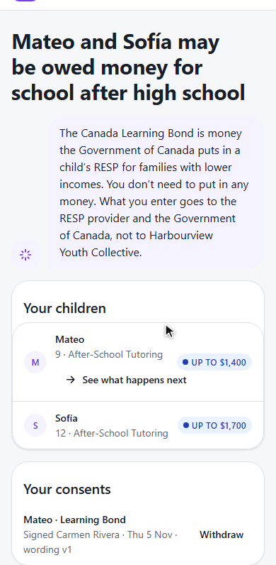
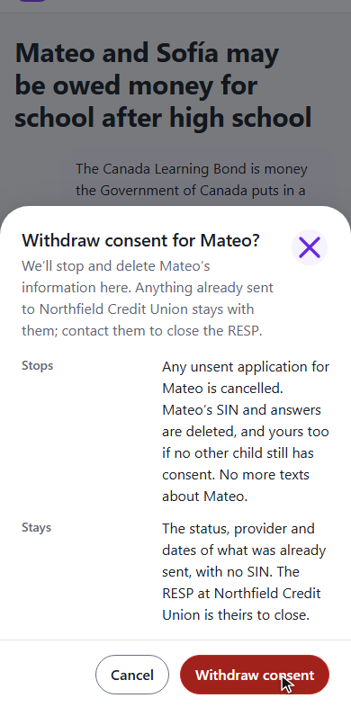
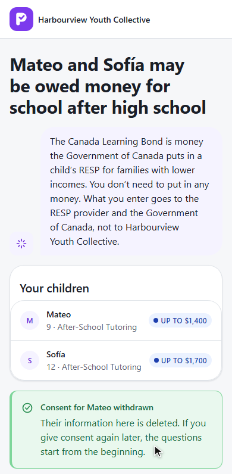

PromiseHub · Video 88
Withdraw Learning Bond consent
Taking consent back: what is destroyed, what is kept, and why
Taking consent back: what is destroyed, what is kept, and why
Your consents, the dialog, done.


DELETE /g/learning-bond/{token}/consents/{id} · LearningBondWithdrawHandler

Consent, then the first question.
Cancel changes nothing.
LearningBondWithdrawTests: before and after Submit, a second child, starting overwithdraw spec · laptop and phone · axe
Next: the benefits check